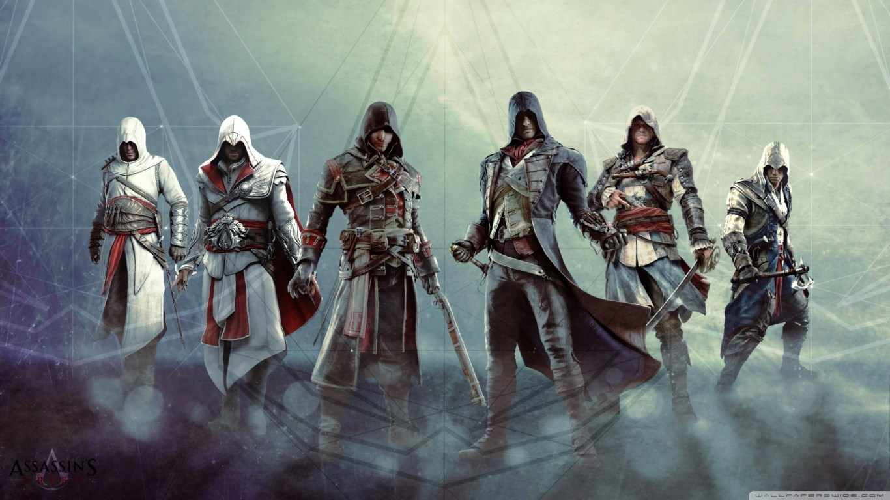
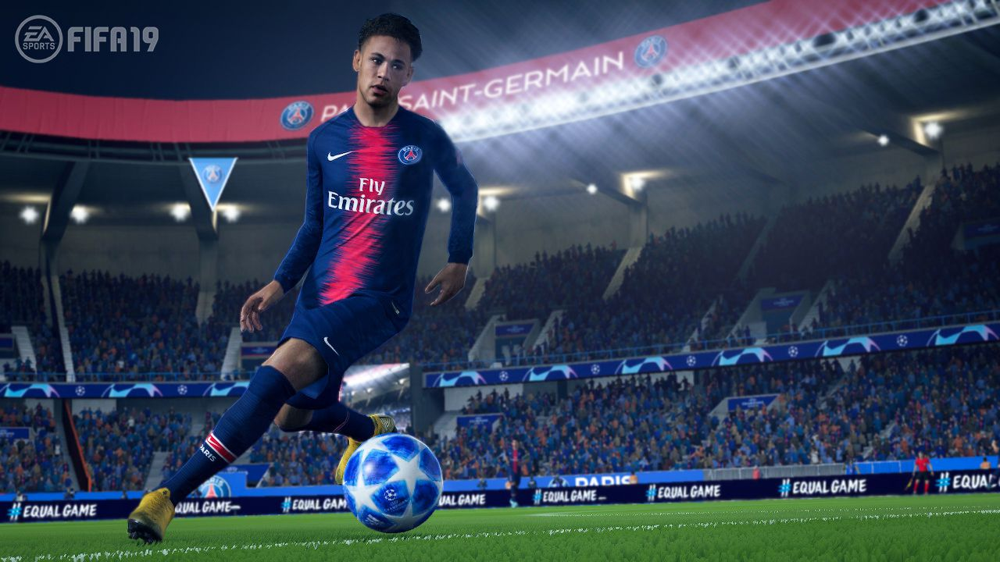
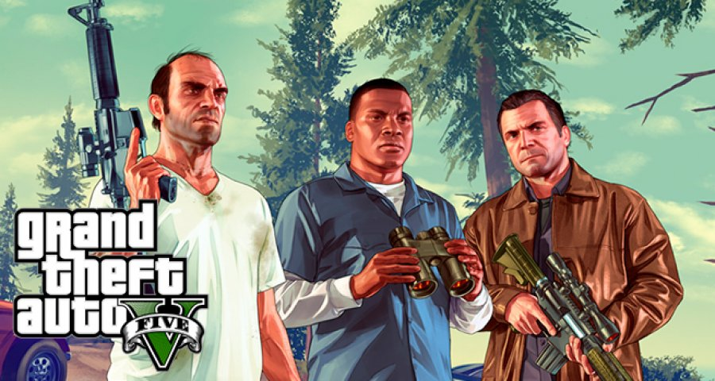

My relationship with Gaming exists since I was a 6 year old kid. Counter Strike,
Cricket 07, Freedom Fighter,GTA Vice City, remember? Yeah, nostalgia hits hard! I have been gaming for more than 10 years. Even when I was preparing for JEE, when society
tells you to give up everything (crap mentality) I continued gaming. I'm a big fan of Assassins Creed games. Especially The Ezio's Trilogy. These games are my favourite ones.

 FIFA is another game which I love a lot. I rememeber winning 1st prize in FIFA 14 in
a college fest in Pune. The fun part? I was in 9th standard! I enjoy gaming thoroughly. Sleeping Dogs, Call Of Duty, Resident Evil of course GTAs are way too good.
After the 1st sem when I had holidays for a few weeks, I had a gaming fever. REAL INTENSE! So intense that I finished complete storyline of GTA5 within a week! Yeah I'm crazy!